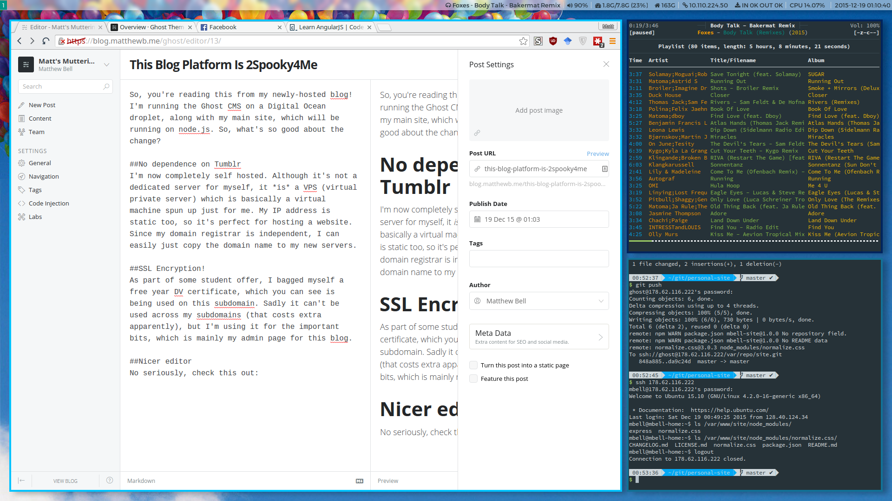

So, you're reading this from my newly-hosted blog! I'm running the Ghost CMS on a Digital Ocean droplet, along with my main site, which will be running on node.js. So, what's so good about the change?
No dependence on Tumblr.
I'm now completely self hosted. Although it's not a dedicated server for myself, it is a VPS (virtual private server) which is basically a virtual machine spun up just for me. My IP address is static too, so it's perfect for hosting a website. Since my domain registrar is independent, I can easily just copy the domain name to my new servers.
SSL Encryption!
As part of some student offer, I bagged myself a free year DV certificate, which you can see is being used on this subdomain. Sadly it can't be used across my subdomains (that costs extra apparently), but I'm using it for the important bits, which is mainly my admin page for this blog.
It's a nicer editor.
No seriously, check this out:

Sweet.
Duh, it's built on Node.js.
I mean, that's half the reason I picked it in the first place. It's open source and I love it. Cheers devs.